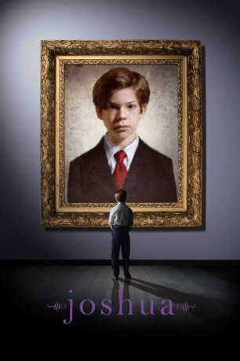

#9764 Joshua - Der Erstgeborene
Alternativ: Joshua
 
 IMDB-Wertung: 5.9 / 10
IMDB-Wertung: 5.9 / 10  Metascore: 0
Metascore: 0 
Die Ankunft eines neugeborenen Mädchens verursacht den allmählichen Zerfall der Familie Cairn. Besonders für den 9-jährigen Joshua, einem exzentrischen Jungen, dessen richtige Erziehung und gehobenen Anspruch eine unheimliche Wendung nehmen.
Jahr: 2007
Dauer: 105 Minuten
FSK: 16
Land: USA Studio: Fox Searchlight PicturesTonspuren: DTS - ,
Untertitel:
Auflösung: 1080p (1920x1048) Größe: 7823 MB
Genre: Thriller, Horror, Drama
Regisseur: George Ratliff
Drehbuch: David Gilbert, George Ratliff
Soundtrack: Nico Muhly
Darsteller:
 Sam Rockwell als Brad Cairn
Sam Rockwell als Brad Cairn Vera Farmiga als Abby Cairn
Vera Farmiga als Abby Cairn Celia Weston als Hazel Cairn
Celia Weston als Hazel Cairn Dallas Roberts als Ned Davidoff
Dallas Roberts als Ned Davidoff Michael McKean als Chester Jenkins
Michael McKean als Chester Jenkins- Jacob Kogan als Joshua Cairn
 Linda Larkin als Ms. Danforth
Linda Larkin als Ms. Danforth- Alex Draper als Stewart Slocum
- Stephanie Roth Haberle als Pediatrician
- Ezra Barnes als Fred Solomon
 Jodie Markell als Ruth Solomon
Jodie Markell als Ruth Solomon- Haviland Morris als Monique Abernathy
- Tom Bloom als Joe Cairn
- Antonia Stout als Museum Staffer
- Randy Ryan als Soccer Dad
- Patrick Henney als Singing Boy
 Gurdeep Singh als Cabbie
Gurdeep Singh als Cabbie- Daniel Jenkins als Minister
- Erik Solky als Park Patron
- Nancy Giles als Betsy Polsheck
- Rufus Collins als Henry Abernathy
- Evan Seligman als Soccer Teammate
- Nicholas Guidry als Bike Messenger
- Darrill Rosen als Homeless Man
- Shianne Kolb als Lily Cairn
- Lacey Vill als Lily Cairn
- Steven Grgas als Soccer Teammate (uncredited)
Datei: X:\2007(G-M)\Joshua - Der Erstgeborene (2007, FSK16, 1920x1048).mkv seit 27.10.2018
Festplatte: HD 2007(A-Z)-2008(A-F)
 Es gibt insgesamt 64 Filme in der Gruppe '2007(G-M)'
Es gibt insgesamt 64 Filme in der Gruppe '2007(G-M)'